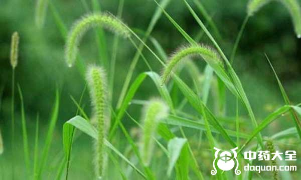
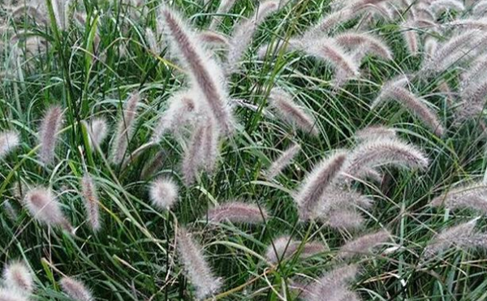

儿童时期我们用狗尾巴草编兔子，却不知道农村随处可见的这种草居然有着极强的药用价值，人们用它来清热降火、清肝明目，那么到底狗尾巴草有什么好处呢，下面我们具体了解狗尾巴草的功效与作用。
1、清热降火
狗尾巴草具有清热解毒的功效，对于上火，口腔溃疡等症状，将狗尾巴草洗净，然后用水熬上30分钟，即可饮用，可以起到清热解毒的效果，缓解咽喉疼痛。
2、明目清肝
狗尾巴草具有明目清肝的作用，可以降肝火，同时对于视力下降比较严重的人，可以用狗尾巴草泡水喝，既可以降肝火，又可以明目。同样适用于适用眼过度的学生和上班族以及用眼模糊的人群。
3、祛湿消肿

狗尾巴草具有祛湿消肿的功效，它的这一功效在民间广为流传，体内湿气重的人群，服用狗尾巴草煮水，可促进尿液排出，将体内的湿气一并排出体外。
4、补气和胃
狗尾巴草被称为“平民医生”，它具有和胃补气、调理脾胃的功效，脾胃不和的患者，用狗尾巴草煮水喝可以健脾、和胃。
5、解毒利尿

狗尾巴草具有解毒利尿的功效，经常喜欢吃烧烤、泡面的人群，体内一定隐藏了太多毒素，可以用狗尾草泡水用来解除体内毒素，还有一类不爱喝水的人群，排尿功能不太顺畅也可以饮用草尾巴草泡水利尿，使尿液顺利排出。
6、治疗羊毛斑
患羊毛痧的人群民间有一种偏方，即是用狗尾巴草煎熬服用，然后用银针挑破红瘰，然后使用麻线用力挤出瘰中白丝如羊毛状者，否则胀死。
狗尾巴草的药用价值高，关于狗尾巴草的副作用暂无，但狗尾巴草的花粉为一种重要致过敏原，使用前最好咨询医生，科学用药。
结语：中医认为狗尾巴草甘平，它的功效为清肝明目、利尿解毒。适用于眼结膜炎、视力减退、小便不利等症状。主治风热感冒、小便涩痛、目赤涩痛、目赤肿痛等的治疗。
了解更多健脾祛湿中成药，为您推荐